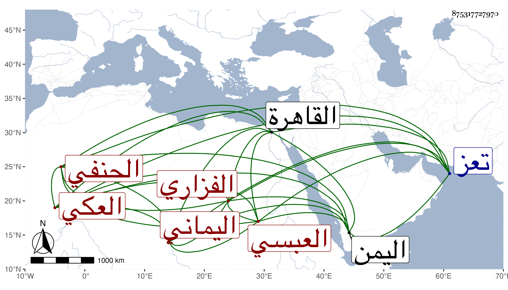

0902Sakhawi.DawLamic.ITO20230111-ara1.EIS1600.875317727970
Biography ID: 875317727970
226
عبد الله بن محمد بن أبي القسم بن علي بن فضل الله بن ثامر بالمثلثة بن إبراهيم العكي الفزاري العبسي اليماني الحنفي ويعرف بالنجري بفتح النون وسكون الجيم ثم مهملة نسبة لقرية قديمة لا تعرف الآن يقال أنها كانت لأحد أجداده . ولد في أحد الربيعين سنة خمس وعشرين وثمانمائة في قرية حوث بضم المهملة وآخره مثلثة من بلاد عبس بالموحدة قبيلة من نزار طرأت على اليمن وهذه القرية من معاملة تعز ، ونشأ بها فقرأ القرآن وبحث على والده في النحو والفقه والأصلين وعلى أخيه علي بن محمد ثم حج في سنة ثمان وأربعين في البحر ثم رحل فيه إلى القاهرة فوصلها في ربيع الأول من التي تليها فبحث بها في النحو والصرف على ابن قديد وأبي القسم النويري وفي المعاني والبيان على الشمني وفي المنطق على التقي الحصني وفي علم الوقت على العز عبد العزيز الميقاتي وحضر في الهندسة قليلا عند أبي الفضل المغربي بل كان يطالع ومهما أشكل عليه يراجعه فيه فطالع شرح الشريف الجرجاني على الجغميني والتبصرة لجابر بن أفلح وفي الفقه على الأمين الأقصرائي والعضد الصيرامي وتقدم حسبما قاله البقاعي في غالب هذه العلوم ، واشتهر فضله وامتد صيته لا سيما في العربية وكتب عنه في سنة ثلاث وخمسين قوله :
| بشاطئ حوث من ديار بني حرب | لقلبي أشجان معذبة قلبي |
| فهل لي إلى تلك المنازل عودة | فيفرج من غمي ويكشف من كربي |
